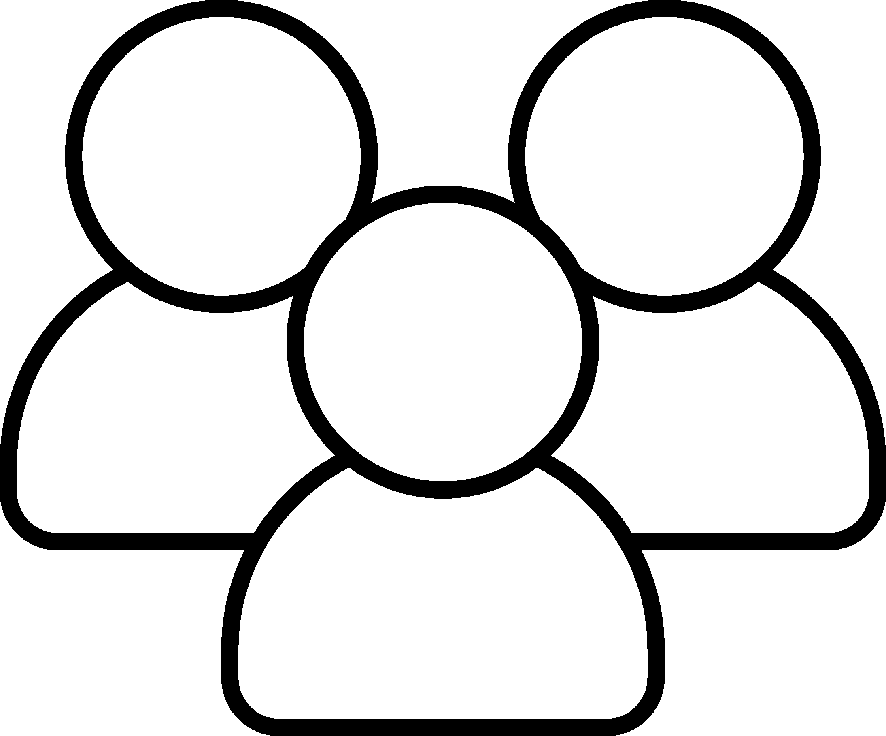

Anarship Space Smuggler est mon 2ème projet de 1ère année à l'ICAN fait sous Construct 3.
C'est un shoot'em up sur PC uniquement jouable à la manette (pour renforcer le côté arcade de notre jeu).
J'ai continué de travaillé dessus même après les soutenances pour le polish un peu plus, notamment en lui rajoutant un clavier
virtuel pour que le joueur ne sorte jamais de l'expérience "manette" afin que comme j'ai dit plus haut, de se rapprocher au mieux de l'expérience "jeu d'arcade".
J'ai également fait un leaderboard local plus fonctionnel ainsi que du bugfix.
Informations Projet

Rôle : Développeur / Game Designer
Taille de l'équipe: 2
Temps de conception: 4 mois
Moteur: Construct 3
Pitch
Prenez le contrôle de votre vaisseau de contrebande et livrez leur marchandise aux gangs et à la pègre !
Vous devrez vous frayer un chemin à travers un univers vaste et rempli de dispositifs militaires qui chercheront à vous arrêter…
L'équipe
Haida Guerry / Direction Artistique, Programmation, Game, Level & Sound Design
Killian Fontaine / Programmation, Game & Sound Design, Documentation
Intentions
Nous voulions pousser la réflexion du joueur dans son appréhension du niveau, son déplacement,
et lui donner une sensation de liberté que ce soit dans la de manière de jouer,
d’emprunter des chemins, ou de charger sa précieuse cargaison.
C’est un jeu où les compétences du joueur seront mises à rude épreuve,
afin de renforcer sa satisfaction personnelle et de lui apporter un sentiment de maîtrise…
Game Design
Nous avons choisi une caméra en vue top/down qui suit constamment le vaisseau du joueur, avec des effets de screenshake,
notamment lorsque celui-ci ou l’un de ses colis subissent des dégâts. Le character principal de notre jeu est le vaisseau du contrebandier,
il a de l’inertie, tourne sur lui même, se déplace dans 8 directions, tire avec un effet de recul et oriente sa tourelle librement…
Gameplay & Level design
Le jeu est constitué d’un niveau unique important, dans lequel le joueur va devoir faire des allers retours entre 4 outposts de gangsters en livrant ses cargaisons.
Pour cela, il va recevoir une communication lui donnant la mission, ainsi qu’une carte permettant au joueur de déterminer quel chemin il devra emprunter.
Sur son chemin des ennemis et obstacles en tout genre vont le gêner…
Le level design est très ouvert : Il y a 4 outposts à égale distance les uns des autres, et le joueur devra donc faire le trajet d’un outpost à l’autre à chaque mission.
Nous avons pensé une carte en espace récursif afin de donner un sentiment de grandeur et pour multiplier le nombre de chemins possibles entre les outposts.
Le joueur peut avoir beaucoup de tailles et de formes différentes liés à la mécanique de packages, la carte dispose donc de chemins de tailles et de formes différentes…
De plus, pour favoriser l’exploration de cette grande carte, nous avons ajouté des passages secrets avec des raccourcis et des powerups…